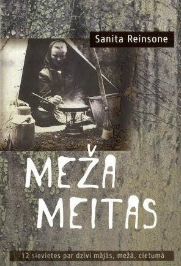

Dokumentālā literatūra
Meža meitas

Reinsone, Sanita. Meža meitas. 12 sievietes par dzīvi mājās, mežā, cietumā. Rīga: Dienas Grāmata, 2015 (2. izdevums – 2022). "Meža meitas" iestudētas Valmieras drāmas teātrī Mārtiņa Eihes režijā (pirmizrāde 2018. gada janvārī).